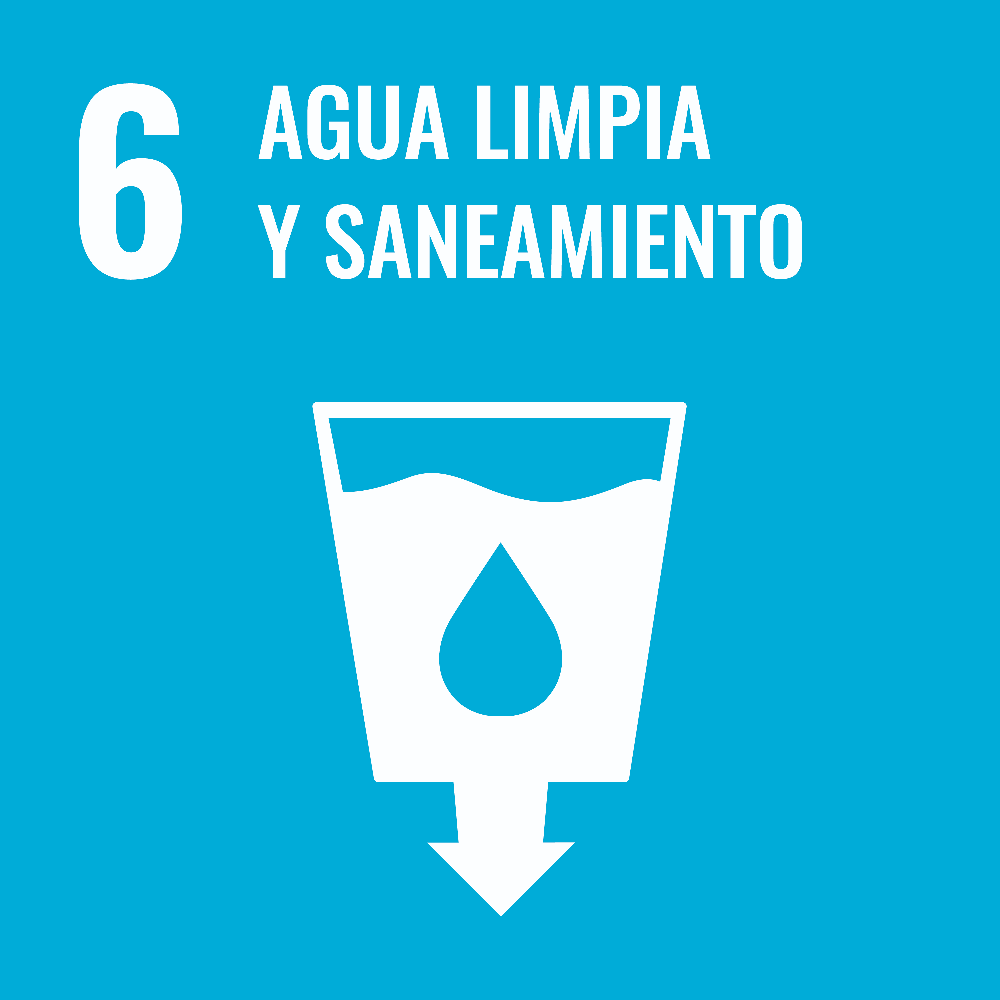

-
¿Cuál es el objetivo principal de este ODS según la ONU? Garantiza el acceso universal al agua, su gestion sostenible y su saneamiento para todos.
-
¿Qué relación tiene con la tecnología o la informática? Permite una gestión inteligente del agua. Además permite que se acelere el proceso de implementación de sistemas que permiten cumplir con los ODS.
-
¿Qué problemas o retos ambientales/sociales afectan al logro de este objetivo? (describe al menos tres).
- Las sequías: provocan que haya menos agua en ciertas zonas del mundo y que se haga más dificil el acceso al agua potable.
- La contaminación: hace que el agua no sea potable y además hace desparecer ciertos ecosistemas donde antes había agua y ahora por culpa de la contaminación estan secos.
-
El cambio climático: esta provocando que haya más sequías y, por lo tanto, que cada vez falte más agua y sea más dificil conseguir el acceso universal al agua potable.
-
¿Cómo influye la actividad tecnológica en esos problemas (de forma positiva o negativa)?
- Se esta utilizando la inteligencia artificial y la digitalización para mejorar la gestión del agua y prevenir estas sequías. Esto significa que la tecnología en este caso influye de forma positiva.
- La creación de estas y los propios dispositivos tecnológicos producen residuos que contaminan al medio ambiente y que si no son reciclados correctamente pueden incluso contaminar mucho más. Esto signifíca que en este caso tiene un impacto negativo para esto.
-
La energía necesaria para alimentar a muchos de los dispositivos tecnológicos favorece la emisión de gases de efecto invernadero y además la producción de estos dispositivos ya de por si emite estos gases desde las fabricas. Esto significa que para este problema también afecta de forma negativa.
-
¿Qué soluciones tecnológicas podrían aplicarse para mitigarlos o resolverlos? La IA y la digitalización ya se estan utilizando para solucionar el tema de las sequías. Se utiliza también tecnología de impresión 3D para crear sensores asequibles y eficientes para monitorear la contaminación. Además gracias a las tecnologías hemos podido crear paneles solares y aerogeneradores para producir energías renovables y evitar así usar metodos que generan gases de efecto invernadero y fomentan la contaminación y el cambio climático.
-
¿Qué ejemplos o casos reales conoces (empresas, proyectos, iniciativas)?
- Algunas ciudades de España se estan utilizando tecnologías IoT para gestionar los residuos y hacer que sus ciudades sean más limpias y esten menos contaminadas.
-
En Singapour utilizan sensores para gestionar la red de suministro de agua y detectar fugas rapidamente, lo que permite una reparación rapida y que así se pierda mucha menos agua.
-
¿Qué indicadores o métricas podrían usarse para medir el progreso hacia este ODS? Se utilizan como indicador de este ODS:
- El porcentage de hogares con acceso a agua potable segura.
- El número de personas que utilizan instalaciones de saneamiento gestionadas de forma segura.
- Proporción de aguas residuales tratadas adecadamente. Estos indicadores ayudan a saber que países avanzan y cuales se quedan mas rezagados.
Tabla con problemas, impactos y soluciones
| Problemas | Impactos | Soluciones |
|---|---|---|
| Sequías | Mejora de la gestión del agua | IA y digitalización |
| ------------------------------------ | ------------------------------- | ------------------------------ |
| Contaminación | Contamina el medio ambiente | Sensores asequibles y eficientes en 3D |
| ------------------------------------ | ------------------------------- | -------------------------------- |
| Cambio climático | Favorece a los gases efecto invernadero | Generación de energías renovables |
Fuentes
-
Pregunta 1: www.un.org, www.pactomundial.org
-
Pregunta 2: www.blogdeinnovacion.com, opencontent.upct.es
-
Pregunta 3: www.sdgfund.org
-
Pregunta 4: www.telefonica.com, www.telefonica.com, www.telefonica.com
-
Pregunta 5: www.imnovation-hub.com, www.dw.com
-
Pregunta 6: www.seidor.com
-
Pregunta 7: ods2030.com